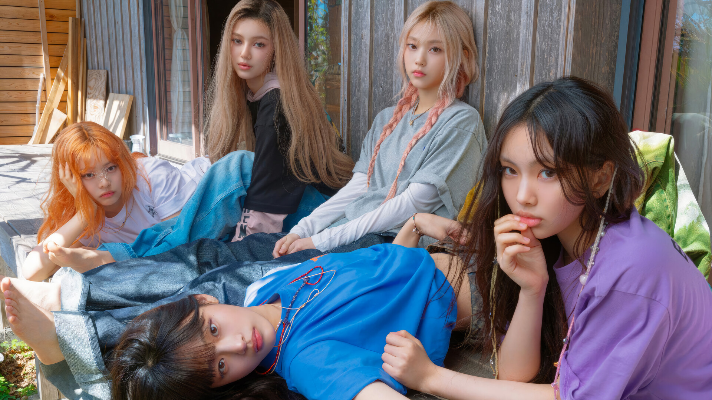

About NewJeans
NewJeans is a five-member girl group under ADOR (a subsidiary of HYBE) that debuted in 2022. The members — Minji, Hanni, Danielle, Haerin, and Hyein — quickly captured the attention of fans worldwide with their refreshing concept, unique visuals, and nostalgic yet modern music style.
Songs like "Attention," "Hype Boy," and "Ditto" gained massive popularity for their innovative sound and viral dance challenges. With their natural image and Gen Z-driven style, NewJeans has become one of the fastest-rising groups in the industry, attracting fans from all age groups.
